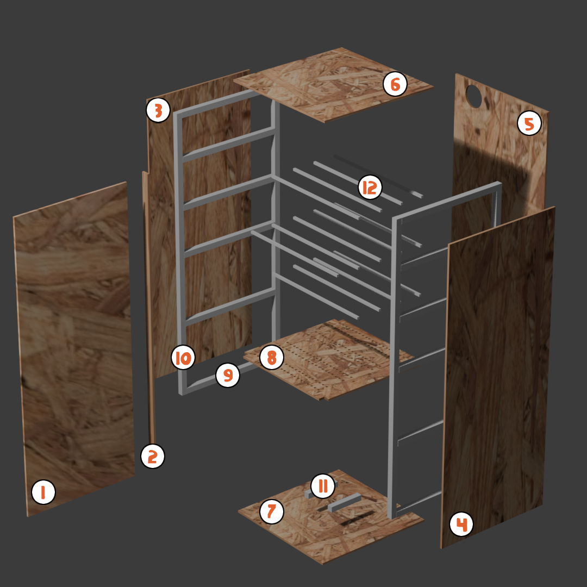
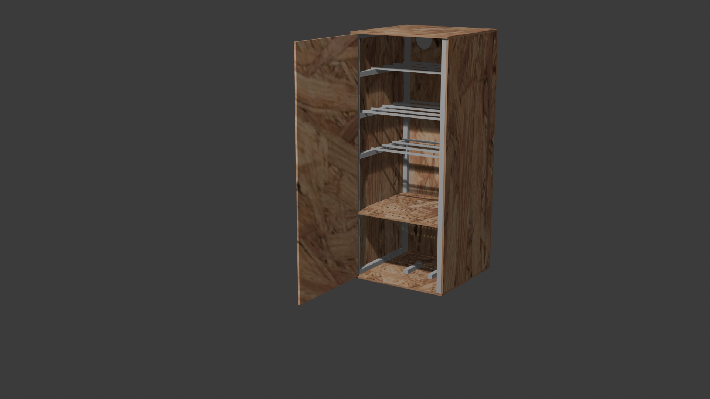

Fabrication de mon fumoir
Pour faire simple, chez moi, je n’ai pas de place pour stocker un fumoir de grande taille. Je n’ai qu’un balcon et une place de parking. J’avais donc besoin d’un fumoir de taille raisonnable, capable de fumer une quantité importante d’aliments, y compris des filets entiers de poisson. Il devait être facilement déplaçable et nettoyable. J’ai donc opté pour un modèle dont l’intérieur mesure environ 50 cm x 50 cm, avec une hauteur de 120 cm pour pouvoir fumer du poisson.
Voici la vue éclatée du projet :

Liste des matériaux et composants
Voici la liste complète des éléments constituant mon fumoir :
Pour le caisson de base, entièrement en OSB3 :
- 2 planches de 50x120 cm pour les côtés droit et gauche (Numéros 3 et 4)
- 1 planche de 51,8x120 cm pour l’arrière (Numéro 5)
- 1 planche de 3,3x120 cm pour le montant de la porte (Numéro 2)
- 1 planche de 48,5x120 cm pour la porte (Numéro 1)
- 2 planches de 51,8x51,8 cm pour le dessus et le dessous (Numéros 6 et 7)
Pour l’armature du caisson, réalisée en tasseaux de pin non traité (carré de 2,4 cm) :
- 8 tasseaux de 120 cm de long (Numéro 10)
- 11 tasseaux de 45,2 cm de long (Numéro 9)
Pour l’intérieur du fumoir :
- Une planche de séparation de 50x50 cm, à laquelle il faut faire des découpes de 2,4 cm à chaque angle (Numéro 8)
Pour disposer la viande ou le poisson, en bois de pin non traité :
- 2 tasseaux de 45,2 cm de long (utilisés pour l’armature) (exactement les mêmes que les Numéros 9)
- 4 (ou plus, selon les besoins) tasseaux servant de traverses pour accrocher les crochets (Numéro 12)
- 2 tasseaux de 25 cm de long servant de support pour la plaque contenant le serpentin (Numéro 11)
Voici une visualisation de ce que le fumoir sera une fois terminé :

N'étant pas équipé énormément en outillage, j'ai opté pour la facilité, certaines enseignes de bricolage proposent directement de faire couper les planches aux bonnes dimensions, c'est ce que j'ai utilisé, ça ne m'a coûté que quelques euros, j'en suis bien content car j'ai eu les dimensions exactes de ce que j'avais besoin, le tout parfaitement droit